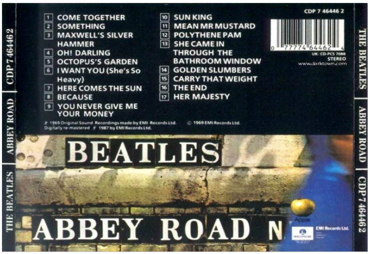

Exercicis 2.2 JSON i YAML
1 EXERCICIS UNITAT 2. XML I
1.1 Exercici 1
Copia el següent exemple en un document mitjançant un editor de text (per exemple, Visual Studio Code). Desa’l amb l’extensió .XML i obre’l amb un navegador.
<?xml version="1.0" encoding="UTF-8"?>
<nom>
<nom>Juan Martín</nom>
<cognoms>Fernández Moreno de la Vega</cognoms>
</nom>1.2 Exercici 2
Crea un document XML el text següent de manera que el marcatge possibiliti les cerques d’informació segons els camps següents: comanda, destinatari de la comanda, article comanda, adreça de lliurament, data de lliurament. Utilitzar un atribut per a la referència (“A2023”).
Comanda per al senyor Juan Delgado Martínez. La comanda està formada per una bicicleta A2023. A lliurar al carrer Barco 4, tercer pis, lletra A, el dia 19-5-2000.
1.3 Exercici 3
Escriure un document XML que representi l’estructura i les dades que es mostren al diagrama següent:
Completar el contingut del document perquè el text complet siga el següent (tres paràgrafs en total):
- Hola què tal?
- Fa molt de temps que no escrius. A veure si crides i quedem aviat.
- Una salutació.
1.4 Exercici 4
Representar l’estructura en arbre, i després escriure un document XML que represente la informació següent sobre la carta del menú d’esmorzars d’un restaurant:
1.5 Exercici 5
Dir si els documents XML següents estan ben formats, i, si no ho estan, dir per què i corregir els errors.
Enunciat document 1:
<?xml version="1.0"?>
<document>
<p>El meu primer <destacar importància=1>document XML</destacar></p]
<p>Comença amb l'etiqueta <document></p>
<p>A continuació col·loquem un element sense contingut</p>
<imatge fitxer="imagen.gif">
</document>Enunciat document 2:
<?xml version="1.0"?>
<llibres>
<llibre id="quixot">
<titol>El Quixot</titol>
<autor nom=Miguel cognom=Cervantes>
<descripcio>És el millor llibre de Cervantes.</descripcio>
</llibre]
</Llibres>1.6 Exercici 6. Cotxes
Tenim un concessionari de cotxes que periòdicament ha d’enviar informació sobre els vehicles que té en oferta a un portal publicitari de compravenda de cotxes. La informació que heu d’enviar és:
- La marca
- El model
- Motor
- Matrícula
- Quilòmetres
- Preu original
- Preu oferta
- Extres
- Fotos
Crea un document XML que contingui informació de com a mínim 2 cotxes.
1.7 Exercici 7
Escriure un document XML per recollir la informació següent sobre arbres:
- Acer monspessulanum
- Nom comú: Arce de Montpellier, Arce menor
- Vegetació: Caducifoli
- Alçada: De 6 a 10 metres
- Forma i estructura: Copa esfèrica. Tronc principal recte amb bifurcacions.
- Ramatge penjant
- Color a la primavera: Fes verd brillant, revers verd blanquinós
- Resistència a les gelades: Gelades fortes (fins a -15ºC)
- Olea europea
- Nom comú: Olivo
- Vegetació: Perenne
- Alçada: De 8 a 15 metres
- Forma i estructura: Copa irregular. Tronc principal irregular amb bifurcacions. Ramatge tortuós
- Color a la primavera: Fes verd fosc, revers verd platejat
- Resistència a les gelades: Gelades mitjanes (fins a -10ºC)
- Platanus orientalis
- Nom comú: Platà
- Vegetació: Caducifoli
- Alçada: De 20 a 25 metres
- Forma i estructura: Copa ovoïdal. Tronc principal recte. Ramatge expandit
- Color a la primavera: Fes verd mitjà, enus verd clar
- Color a la tardor: Ocre
- Resistència a les gelades: Gelades fortes (fins a -20ºC)
- Quercus ilex
- Nom comú: Alzina
- Vegetació: Perenne
- Alçada: Al voltant de 25 metres
- Forma i estructura: Copa esfèrica o el·líptica irregular. Tronc principal recte. Ramatge tortuós
- Color a la primavera: Platejat en fulles joves. En fulles antigues, fes verd fosc, revers platejat
- Resistència a les gelades: Gelades fortes (fins a -15ºC)
Representar la vegetació com a atribut.
1.8 Exercici 8. Llibres
Crear un document XML ben format amb informació de llibres trobats a diverses llibreries electròniques sobre la temàtica ‘XML’. Sobre cada llibre necessitem saber:
- El codi ISBN
- El títol
- El nivell de profunditat en el tractament de la matèria (bàsic, intermedi o avançat)
- Els autors
- L’editorial
- La data de publicació
- La pàgina web del llibre en cas que en tingui.
- El preu
Hem d’incloure informació d’un mínim de dues llibreries i per a cadascuna mínim tres llibres. Representar el nivell de profunditat com a atribut.
1.9 Exercici 9 CD música
Escriure un document XML ben format per emmagatzemar la informació dels CD continguda en les imatges següents. El document XML ha de contenir la major informació possible.
